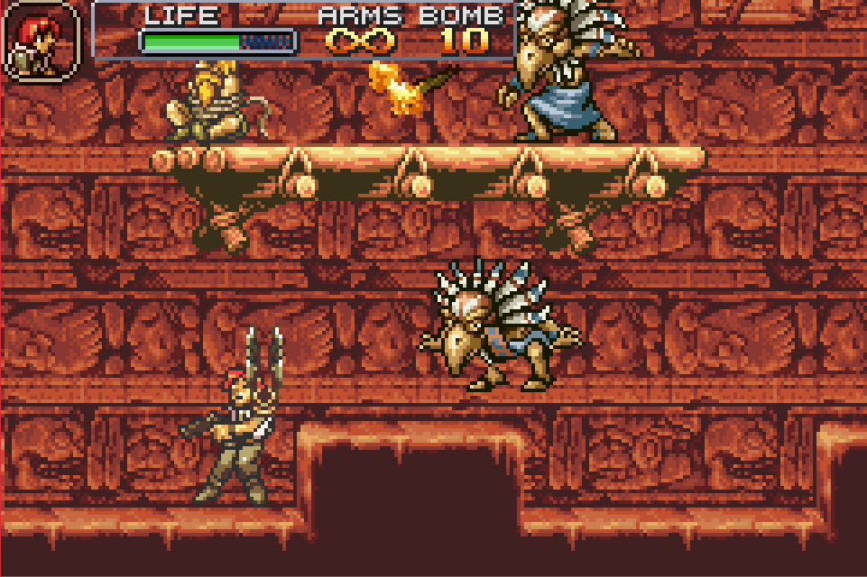
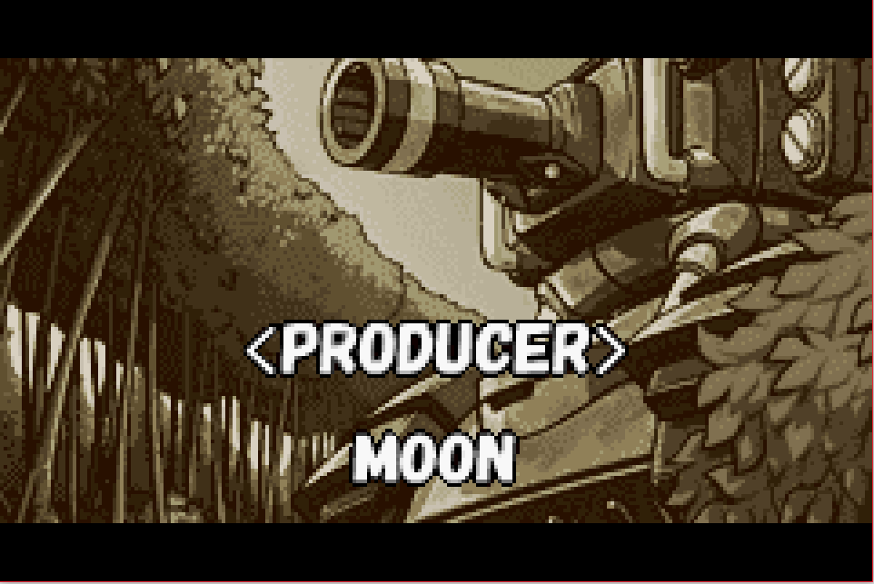
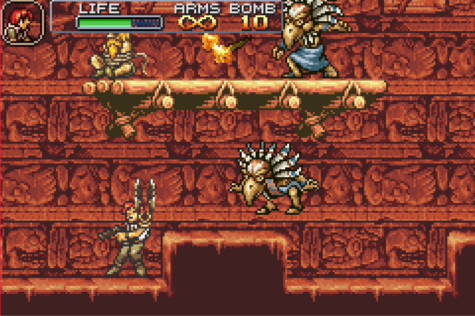
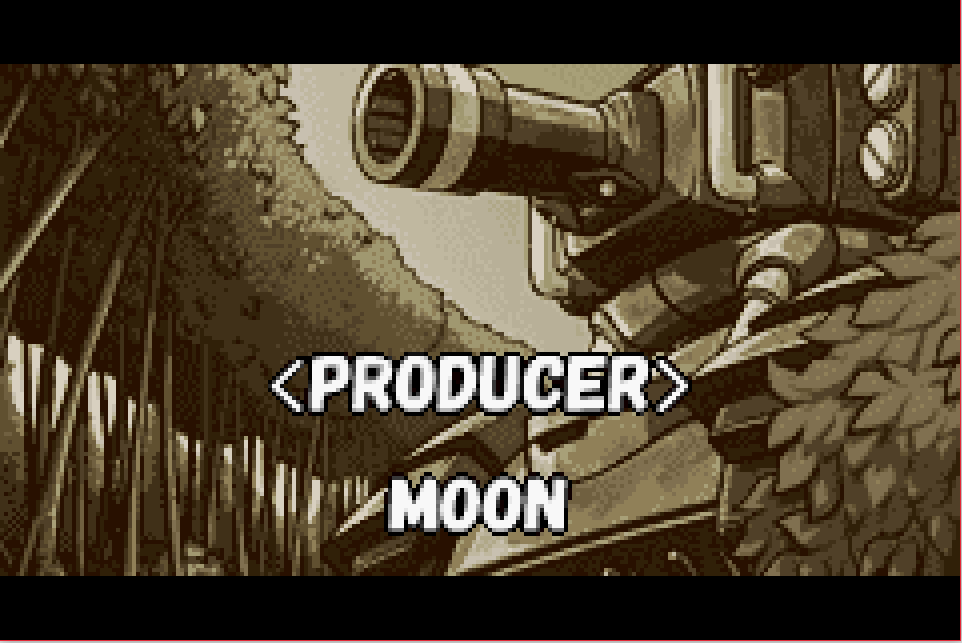

Metal Slug Advance

Complete on 2017-11-17
3 / 5
Release Date: Dec 2, 2004
Meta Score: 79
Screenshots
 



Notes
Metal Slug Advance is a portable entry in the classic series of run-n-gun arcade games. The title is named after a tank that appears in every entry for the hero(es) to hop in and blast through the levels. I've never played much Metal Slug before, so I can't comment on how this fits in with the series.Story wise, this is a spin-off, (I think) following some new recruits who start training and then find the island they are training on invaded by real enemies. At least I think that was the plot, it's not very well explained in game. Metal Slug games have never really been about the deep story though.
Gameplay wise, this is fairly straightforward run and gun. You run. And you gun. Occasional boss fights punctuate the levels, which are all giant machines of some kind. You start with a basic pistol and a melee knife attack, and find new gun power ups with limited ammo throughout the levels. In addition to just running through to complete the levels, there are prisoners to save and collectable cards to find which the game keeps track of for you.
The game is pretty short, with only a handful of levels. It wasn't hugely difficult either. There are no lives, dying just starts you back at the beginning of the current section of the level. I only had trouble with one or two of the bosses. Running through the stages wasn't particularly difficult except for one section with a forced fight next to some instant-death-bottomless-pits which was frustrating. The game does compensate by giving you a free tank if you die a lot in the same place though.
Overall, I had fun with Metal Slug but it didn't make a big impression or stand out.